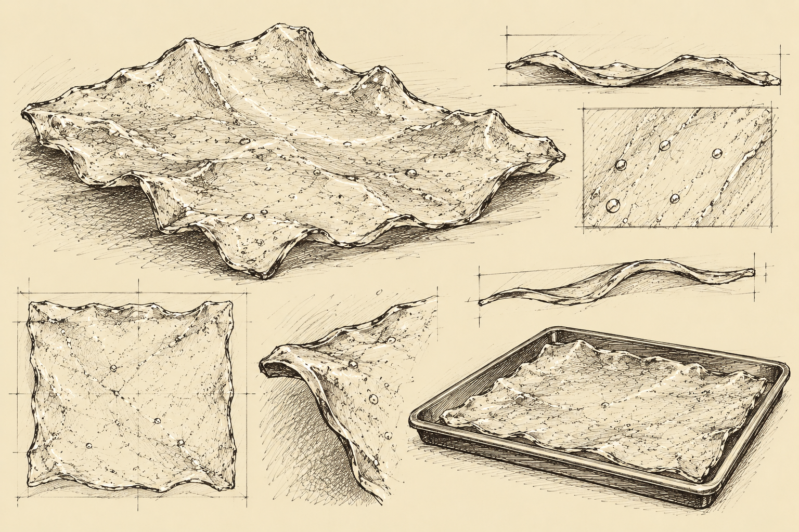

Entry XIV
The Offsite Journal of Elias Grimsby
The First Monday in the World's Largest Apple
I have begun my investigation of New York City.
Upon exiting the coach, I was immediately struck by the extraordinary height of the buildings.
The Americans appear to have developed a considerable enthusiasm for building upward.
I cannot imagine why.
There seems to be ample room in the other directions.
However...
My immediate concern was the apple.
I had traveled a considerable distance to examine this botanical marvel.
And I intended to do so.
Fortunately, I located a merchant selling fruit along the street.
I approached his establishment and requested to examine his apples.
He obliged.
I inspected several specimens.
Their dimensions were unremarkable.
I inquired whether he kept the larger ones elsewhere.
He informed me that these were the largest available.
Most disappointing.
I asked where the trees were located.
He informed me that he did not grow the apples himself.
I find this a peculiar arrangement for a man who sells them.
I explained that I had come specifically to examine the enormous apple for which this city is apparently renowned.
He stared at me.
I stared back.
He suggested I speak to someone else.
I was beginning to suspect that the city's botanical reputation had been greatly exaggerated.
It was at this point that I encountered a young man wearing a peculiar red hat.
He appeared entirely too pleased with himself.
I could discern no obvious reason for this.
He asked whether I knew where the ducks went when the pond in Central Park froze.
I explained that ducks are migratory waterfowl.
Many travel south as temperatures decline.
Others relocate to nearby bodies of water that remain unfrozen.
Some species are quite capable of enduring colder conditions.
He asked where they went.
I repeated my explanation.
He asked whether someone came and took them away.
I informed him that ducks possess wings and are generally capable of arranging their own transportation.
He seemed dissatisfied.
I elaborated upon seasonal migration, available food sources, and the physiological adaptations of waterfowl.
He asked where the ducks went.
I was beginning to dislike this young man.
I suggested that he visit the pond and inquire directly.
He appeared to consider this a perfectly reasonable proposal.
I found that troubling.
Fortunately, our conversation was interrupted by a considerable commotion farther down the street.
Several people were shouting.
Someone mentioned a peculiar creature.
Another mentioned sweets.
H-31!
Ordinarily, reports of H-31 causing a disturbance would concern me.
On this occasion, I found the interruption most welcome.
I excused myself and proceeded toward the commotion with all available haste.
This proved difficult.
The streets were crowded.
I was forced to navigate around several pedestrians, a delivery cart, and a group of young gentlemen selling newspapers.
The young gentlemen appeared to be performing an elaborate synchronized dance.
Their dedication to choreography was remarkable.
I am uncertain how this improves newspaper sales.
However...
The Americans do things differently.
I continued.
The disturbance appeared to have originated in an alley behind a drinking establishment.
I entered cautiously.
There was no sign of H-31.
Again.
Several discarded containers littered the ground.
A wooden crate had been overturned.
And near the rear entrance of the establishment, I discovered something most peculiar.
A small, thin, translucent object.
At first, I believed it to be a fragment of glass.
However...
Its shape was unusually regular.
Its surface possessed a faint golden coloration.
And upon closer examination, I observed a small quantity of white substance, a fragment of cooked meat, and a piece of green vegetation adhering to it.
I could not determine why anyone would arrange food upon broken glass.
The Americans have demonstrated several unusual culinary practices during my travels.
Perhaps this is another.
I held the object toward the light.
It was nearly transparent.
Yet it did not appear to possess the weight or rigidity I would expect from ordinary glass.
Most curious.
I considered tasting it.
Briefly.
I decided against this.
The object bears certain similarities to materials previously recovered during my pursuit of H-31.
I have carefully secured the specimen and arranged for its return to the Institute.

Pending tests.
I remain convinced that H-31 is somewhere within this city.
Unfortunately, I have yet to locate the enormous apple.
I shall continue both investigations.